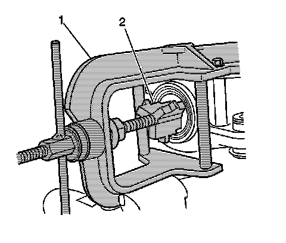
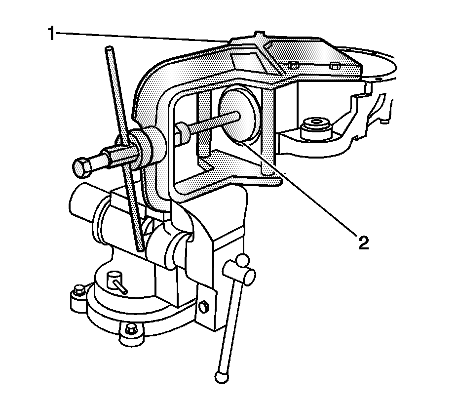
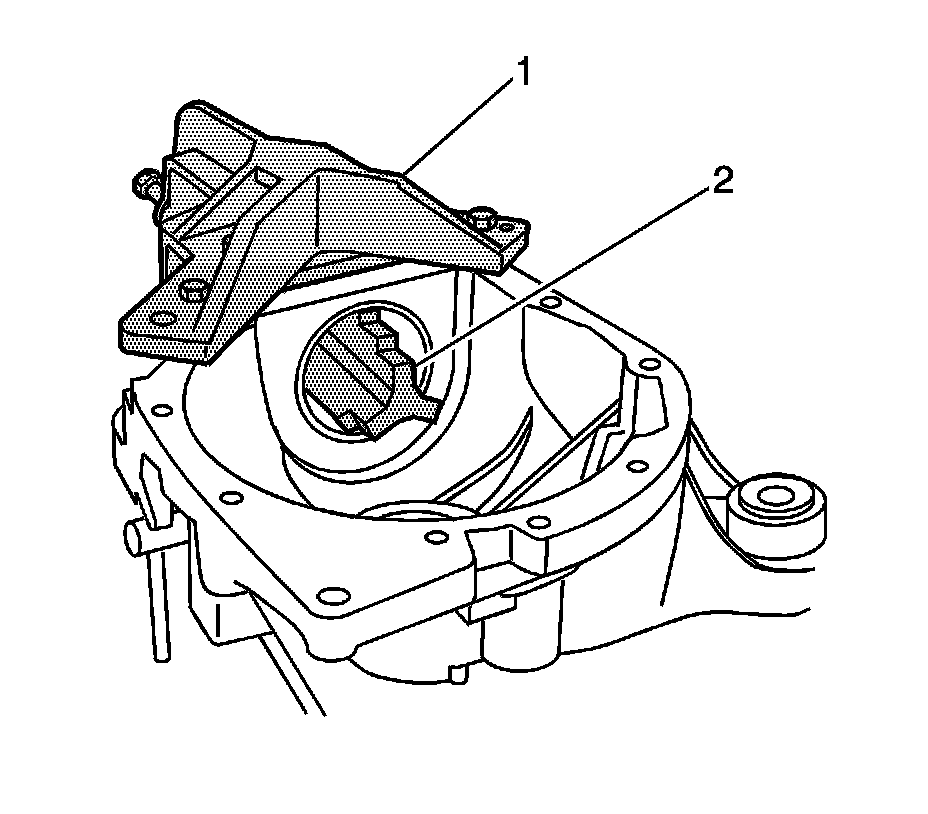

Pinion Bearing Cup Installation (8.25/9.25 Inch Axles w/J 36598)
Pinion Bearing Cup Installation (8.25/9.25 Inch Axles w/J 36598)
Tools Required
J 36598 Holding Fixture
1. Before assembly, apply axle lubricant to the pinion bearing cups. Refer to Sealers, Adhesives, and Lubricants.
2. Install the J 36598 into a vise.

3. Install the left differential carrier case half into the J 36598 and the J 36598-6, 8.25 inch axle, or the J 36598 (1), 9.25 inch axle.
Tighten the attaching bolts securely.
4. Install the J 36598-3, 8.25 inch axle, or the J 36598-4, 9.25 inch axle (2), onto the forcing screw of the J 36598.
5. Install the outer pinion bearing cup into the differential carrier case.
6. Install the J 36598-3, 8.25 inch axle, or the J 36598-4, 9.25 inch axle (2) onto the outer pinion bearing cup.
Rotate the J 36598-3 or the J 36598-4 and the outer pinion bearing cup several time in order to seat the outer pinion bearing cup evenly within the outer pinion bearing cup bore.
7. Install the outer pinion bearing cup into the differential carrier case half by holding the forcing screw of the J 36598 and turning the handle counterclockwise.
Inspect the position of the outer pinion bearing cup as it is being installed into the outer pinion bearing cup bore to ensure the bearing cup is being installed evenly. If the pinion bearing cup is not being installed evenly, loosen the J 36598 and remove the outer pinion bearing cup. Reposition the outer pinion bearing cup over the outer pinion bearing cup bore and re-install.
8. Remove the J 36598-3 or the J 36598-4 from the forcing screw of the J 36598.

9. Install the J 36598-15 (2) into the outer pinion bearing cup.
10. Install the inner pinion bearing cup into the inner pinion bearing cup bore.

11. Place the J 36598-3, 8.25 inch axle, or the J 36598-4, 9.25 inch axle (2), over the inner pinion bearing cup.
12. Extend the forcing screw of the J 36598 (1) through the J 36598-15 and thread it into the J 36598-3 or the J 36598-4 (2) until fully seated.
13. Rotate the J 36598-3 or the J 36598-4 several times in order to ensure the inner pinion bearing cup is evenly seated and not mis-aligned in the bore.
14. Install the inner pinion bearing cup into the differential carrier case half by holding the forcing screw of the J 36598 and turning the handle clockwise.
Inspect the position of the inner pinion bearing cup as it is being drawn into the inner pinion bearing cup bore to ensure the bearing cup is being installed evenly. If the pinion bearing cup is not being installed evenly, loosen the J 36598 and remove the inner pinion bearing cup. Reposition the inner pinion bearing cup over the inner pinion bearing cup bore and re-install.
15. Remove the J 36598-3 or the J 36598-4 and the J 36598-15.
16. Remove the differential carrier case.
17. Remove the J 36598 from the vise.
18. Determine the selective shim thickness for the pinion. Refer to Pinion Depth Adjustment.